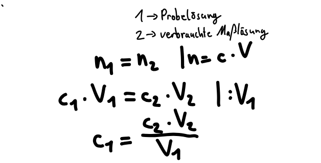
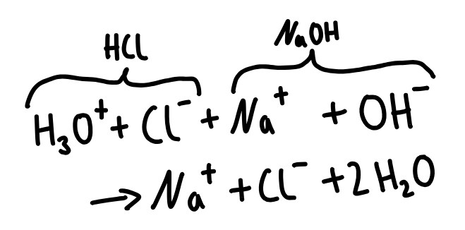
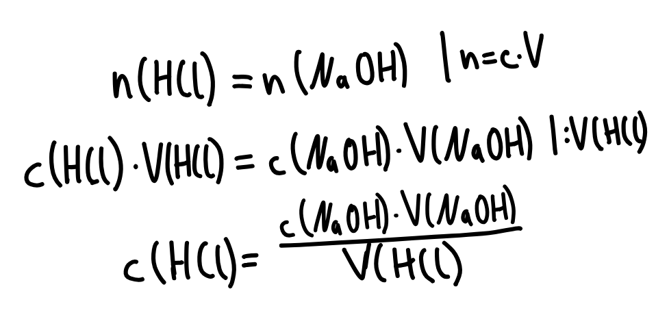
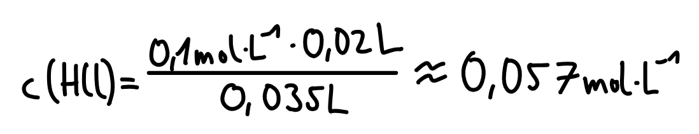

Die Stoffmengenkonzentrationen einer Probelösungen lässt sich durch die Titration bestimmen. Dabei wird eine Maßlösung(wässrige Lösung einer starken(vollständig protolysierten) Säure/Base,) bis zum Erreichen des Äquivalenzpunkts hinzugegeben. An diesem ÄP gilt bei gleichtprotonigen Säuren/Basen durch die vollständige Neutralisation: n(Base)=n(Säure). Da V(Probelösung), V(Maßlösung) und c(Maßlösung) bekannt sind, lässt sich c(Probelösung) berechnen:

Beispiel
Bei einer Titration von 35mL salzsaurer Lösung werden bis zum ÄP 20mL der Maßlösung(Natronlauge, c=0,1 mol/L) verbreucht.
1. Formulieren der ablaufenden Neutralisationsreaktion:

2. Formulieren/Umstellen der Gleichung n(Säure)=n(Base):

Beispiel Fortsetzung
3. Ausrechenen der unbekannten Konzentration:

Tipps
Bei mehrprotonigen Säuren muss das Stoffmengenverhältnis beachtet werden ➔ klicken
Einheiten korrekt umrechnen und notieren
Als Maßlösung wird eine vollständig dissoziierte Säure/Base verwendet. Nur so kann von der verbrauchten Stoffmenge der Maßlösung auf die der Probelösung geschlossen werden. So können auch schwache/mittelstarke Probelösungen, die nicht vollständig dissoziiert sind vollständig neutralisiert werden, da sich das GGW durch die Neutralisationsreaktion auf die Seite der Produkte verschiebt.